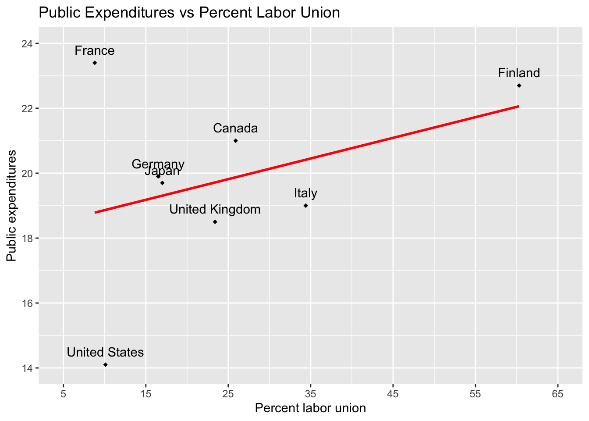
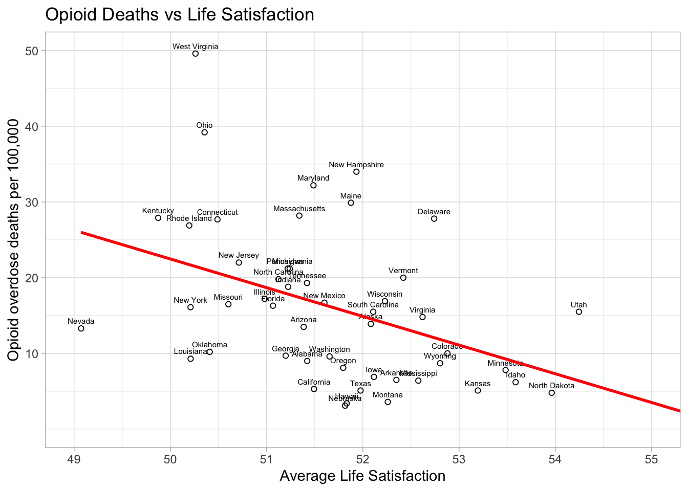

library(usethis) # use_github_file()
library(tidyverse) # read_csv()
library(janitor) # clean_names() 3 Simple Linear Regression Models
3.1 Required packages
The following CRAN packages must be installed:
| Required CRAN Packages |
|---|
| tidyverse |
| usethis |
| janitor |
| skimr |
| apaTables |
| tidymodels |
| broom |
| psych |
REMINDER: Never use the command library(psych).
3.2 Page 40 Graphing Introduction
3.2.1 Activate packages
3.2.2 Obtain data and save it to your computer
use_github_file(repo_spec = "https://github.com/johnhoffmannVA/LinearRegression/blob/main/Nations2018.csv",
save_as = "nations2018.csv")3.2.3 Load data from your computer
nations2018 <- read_csv("nations2018.csv") %>%
clean_names()3.2.4 Inspect data
nations2018 %>%
glimpse() Rows: 8
Columns: 4
$ nation <chr> "Canada", "Finland", "France", "Germany", "Italy", "Japan", "…
$ expend <dbl> 21.0, 22.7, 23.4, 19.9, 19.0, 19.7, 18.5, 14.1
$ econopen <dbl> 64.5, 76.2, 62.7, 87.4, 59.1, 34.6, 60.8, 27.1
$ perlabor <dbl> 25.9, 60.3, 8.8, 16.5, 34.4, 17.0, 23.4, 10.1| nation | expend | econopen | perlabor |
|---|---|---|---|
| Canada | 21.0 | 64.5 | 25.9 |
| Finland | 22.7 | 76.2 | 60.3 |
| France | 23.4 | 62.7 | 8.8 |
| Germany | 19.9 | 87.4 | 16.5 |
| Italy | 19.0 | 59.1 | 34.4 |
| Japan | 19.7 | 34.6 | 17.0 |
| United Kingdom | 18.5 | 60.8 | 23.4 |
| United States | 14.1 | 27.1 | 10.1 |
3.2.4.1 Graph
nations_plot <- ggplot(data = nations2018,
mapping = aes(x = perlabor,
y = expend)) +
geom_point(shape = 18) +
geom_text(mapping = aes(label = nation),
nudge_y = .4) +
geom_smooth(method = "lm",
se = FALSE,
color = "red") +
coord_cartesian(xlim = c(5, 65),
ylim = c(14, 24)) +
scale_x_continuous(breaks = seq(5, 65, by = 10)) +
scale_y_continuous(breaks = seq(14, 24, by = 2)) +
labs(x = "Percent labor union",
y = "Public expenditures",
title = "Public Expenditures vs Percent Labor Union")
print(nations_plot)`geom_smooth()` using formula = 'y ~ x'
3.3 Pages 44 to 46 Analysis and Graphing
3.3.1 Activate packages
library(usethis) # use_github_file()
library(tidyverse) # read_csv()
library(janitor) # clean_names() 3.3.2 Obtain data and save it to your computer
use_github_file(repo_spec = "https://github.com/johnhoffmannVA/LinearRegression/blob/main/StateData2018.csv",
save_as = "statedata2018.csv")3.3.3 Load data from your computer
Clean names is essential here. It makes sure all column names are lower case. They are not all lower case in the original data file.
statedata2018 <- read_csv("statedata2018.csv") %>%
clean_names()3.3.3.1 Inspect data
There are so many column names in this data set that we do the glimpse a bit differently. That is, we sort the order of the columns alphabetically prior to doing the glimpse(). It affects only the display of the column names - not the structure of the data.
statedata2018 %>%
select(sort(names(statedata2018))) %>%
glimpse() Rows: 50
Columns: 77
$ aa_voted_percent <dbl> 49.6, NA, 50.9, 41.6, 49.9, 31.0, 48.3, 55.…
$ alc_disorder_past_year <dbl> 4.51, 6.57, 5.49, 5.38, 5.51, 6.30, 6.10, 6…
$ assault_rate <dbl> 283.4, 440.2, 252.1, 346.0, 236.6, 192.8, 1…
$ assoc_degree <dbl> 8.2, 8.5, 8.4, 6.7, 7.7, 8.6, 7.5, 7.9, 9.7…
$ bach_degree <dbl> 15.4, 19.0, 18.1, 14.2, 20.6, 24.9, 21.9, 1…
$ binge_alc_past_month <dbl> 21.40, 24.20, 23.10, 19.49, 23.52, 26.97, 2…
$ burglary_rate <dbl> 819.0, 427.6, 647.1, 835.7, 522.3, 438.2, 3…
$ census_division <chr> "EastSouthCentral", "Pacific", "Mountain", …
$ census_region <chr> "South", "West", "West", "South", "West", "…
$ comm_supervision_rate <dbl> 1591.14, 1522.95, 1503.95, 2222.08, 1088.59…
$ community_supervision <dbl> 60700, 8400, 84800, 51500, 333300, 90900, 4…
$ conservative <dbl> 26.00835, 19.27924, 20.40239, 25.04501, 17.…
$ cost_living <dbl> 89.3, 129.9, 97.0, 86.9, 151.7, 105.6, 127.…
$ death_row <dbl> 177, 0, 120, 32, 727, 3, 0, 0, 348, 49, 0, …
$ death_row_rate <dbl> 4.33, 0.00, 2.18, 1.33, 3.59, 0.09, 0.00, 0…
$ doctoral_degree <dbl> 1.0, 1.2, 1.2, 0.9, 1.6, 1.6, 1.6, 1.8, 1.1…
$ dom_mig_rate <dbl> 1.17, -14.58, 11.61, 0.82, -3.95, 7.60, -6.…
$ dom_migration <dbl> 5718, -10752, 83240, 2475, -156068, 43293, …
$ fips_code <dbl> 1, 2, 4, 5, 6, 8, 9, 10, 12, 13, 15, 16, 17…
$ gross_state_product <dbl> 211197, 51479, 326446, 122704, 2797601, 345…
$ guns <dbl> 161641, 15824, 179738, 79841, 344622, 92435…
$ guns_per_capita <dbl> 33.15, 21.38, 25.61, 26.57, 8.71, 16.48, 22…
$ health_exp_per_capita <dbl> 7281, 11064, 6452, 7408, 7549, 6804, 9859, …
$ illicit_disorder_past_year <dbl> 2.86, 3.69, 2.79, 2.80, 2.97, 3.43, 3.47, 3…
$ illicit_drugs_past_month <dbl> 8.67, 16.81, 10.77, 10.51, 13.11, 17.83, 12…
$ infant_mortality_rate <dbl> 9.03, 5.17, 5.32, 8.20, 4.22, 4.76, 4.78, 7…
$ intern_mig_rate <dbl> 0.68, 3.26, 2.00, 0.75, 2.98, 1.44, 4.62, 1…
$ intern_migration <dbl> 3344, 2401, 14335, 2260, 117797, 8207, 1649…
$ larceny_rate <dbl> 2149.5, 2096.4, 2289.1, 2313.5, 1527.4, 185…
$ latinx_voted_percent <dbl> 29.1, NA, 48.8, 20.8, 43.3, 43.9, 41.1, NA,…
$ life_expectancy <dbl> 75.0, 77.8, 79.2, 75.5, 81.0, 80.0, 80.7, 7…
$ life_satis <dbl> 51.42162, 52.08266, 51.38469, 52.34836, 51.…
$ masters_degree <dbl> 6.9, 7.6, 7.8, 5.9, 8.4, 10.9, 12.1, 8.9, 7…
$ med_hh_income <dbl> 48486, 76715, 56213, 45726, 71228, 68811, 7…
$ median_age <dbl> 39.0, 33.5, 37.5, 38.0, 36.4, 36.7, 40.9, 4…
$ mental_illness_past_year <dbl> 19.95, 20.32, 18.02, 20.73, 18.18, 19.86, 1…
$ motor_vehicle_theft_rate <dbl> 209.1, 236.0, 261.3, 188.8, 391.3, 234.8, 1…
$ murder_ms_rate <dbl> 5.7, 5.6, 4.7, 5.6, 4.4, 2.8, 2.4, 5.8, 5.8…
$ opioid_od_death_rate <dbl> 9.0, 13.9, 13.5, 6.5, 5.3, 10.0, 27.7, 27.8…
$ pain_pill_past_year <dbl> 4.53, 4.81, 4.27, 5.03, 4.30, 4.87, 4.21, 4…
$ per_age0_18 <dbl> 24, 27, 24, 25, 24, 24, 22, 22, 21, 26, 23,…
$ per_age19_25 <dbl> 9, 9, 9, 9, 9, 9, 8, 8, 8, 9, 7, 9, 9, 9, 9…
$ per_age26_34 <dbl> 12, 13, 12, 12, 14, 14, 11, 12, 12, 12, 12,…
$ per_age35_54 <dbl> 25, 26, 24, 25, 26, 26, 27, 25, 25, 27, 25,…
$ per_age55_64 <dbl> 14, 13, 12, 13, 12, 13, 15, 14, 14, 12, 13,…
$ per_age65plus <dbl> 17, 12, 18, 17, 14, 14, 17, 19, 21, 14, 19,…
$ per_am_ind_alaskan <dbl> 1.0, 16.0, 4.0, 1.0, 1.0, 1.0, 0.5, 0.5, 0.…
$ per_asian <dbl> 1, 6, 3, 2, 15, 3, 5, 4, 3, 4, 38, 2, 6, 2,…
$ per_black <dbl> 26.0, 3.0, 4.0, 15.0, 5.0, 4.0, 10.0, 21.0,…
$ per_cap_income <dbl> 26846, 35874, 29265, 25635, 35021, 36415, 4…
$ per_child_poverty <dbl> 24, 13, 20, 24, 17, 12, 14, 17, 19, 20, 12,…
$ per_latinx <dbl> 4, 7, 32, 8, 39, 22, 17, 9, 26, 10, 10, 13,…
$ per_pop_change2010_18 <dbl> 2.254, 3.828, 12.192, 3.354, 6.181, 13.247,…
$ per_poverty <dbl> 16.89, 11.11, 14.86, 16.40, 13.30, 10.29, 9…
$ per_white <dbl> 66, 60, 54, 72, 37, 68, 66, 62, 53, 52, 21,…
$ percent_uninsured <dbl> 12.0, 14.3, 12.7, 9.8, 8.3, 8.6, 6.2, 6.8, …
$ pop_change2010_18 <dbl> 107733, 27189, 779358, 97797, 2302522, 6662…
$ pop_density <dbl> 95.4, 1.3, 58.3, 56.9, 246.1, 50.8, 742.6, …
$ pop18and_older <dbl> 3814879, 551562, 5638481, 2317649, 30617582…
$ population <dbl> 4887871, 737438, 7171646, 3013825, 39557045…
$ prison_rate <dbl> 1072.12, 797.73, 975.44, 1035.53, 662.04, 7…
$ prisoners <dbl> 40900, 4400, 55000, 24000, 202700, 32100, 1…
$ professional_degree <dbl> 1.5, 1.8, 1.8, 1.3, 2.4, 2.3, 3.0, 1.9, 2.1…
$ prop_crime_rate <dbl> 3177.6, 2760.0, 3197.5, 3338.0, 2441.1, 253…
$ rape_rate <dbl> 41.3, 104.7, 50.2, 59.4, 29.7, 56.7, 21.7, …
$ religious <dbl> 32.03850, 24.12306, 26.40519, 30.05092, 24.…
$ robbery_rate <dbl> 96.9, 85.4, 92.8, 69.1, 125.5, 56.7, 87.8, …
$ state <chr> "Alabama", "Alaska", "Arizona", "Arkansas",…
$ state_taxes_per_capita <dbl> 2262, 2226, 2272, 3266, 4424, 2599, 5341, 4…
$ suic_rate_age_adj <dbl> 16.6, 27.0, 18.2, 20.8, 10.5, 20.3, 10.5, 1…
$ suicide_idea_past_year <dbl> 3.89, 5.34, 4.02, 4.59, 4.04, 5.41, 4.05, 4…
$ suicide_rate <dbl> 15.90, 28.07, 19.37, 21.72, 11.48, 21.59, 1…
$ tobacco_past_month <dbl> 30.12, 26.68, 21.19, 30.69, 16.23, 20.15, 2…
$ total_voted_percent <dbl> 69.0, 67.7, 68.6, 58.5, 61.5, 65.6, 68.0, 6…
$ unemploy_rate <dbl> 4.1, 6.5, 4.7, 3.5, 4.1, 3.1, 4.2, 4.0, 3.5…
$ violent_crime_rate <dbl> 427.4, 635.8, 399.9, 480.1, 396.1, 309.1, 2…
$ white_voted_percent <dbl> 52.6, 60.3, 65.3, 44.0, 61.4, 62.6, 57.7, 5…3.3.4 Graph
state_plot <- ggplot(data = statedata2018,
mapping = aes(x = life_satis,
y = opioid_od_death_rate)) +
geom_point(shape = 1) +
geom_text(mapping = aes(label = state),
nudge_y = 1,
size = 2) +
geom_smooth(method = "lm",
se = FALSE,
color = "red") +
coord_cartesian(xlim = c(49, 55),
ylim = c(0, 50)) +
scale_x_continuous(breaks = seq(49, 55, by = 1)) +
scale_y_continuous(breaks = seq(10, 50, by = 10)) +
labs(x = "Average Life Satisfaction",
y = "Opioid overdose deaths per 100,000",
title = "Opioid Deaths vs Life Satisfaction") +
theme_light()
print(state_plot)`geom_smooth()` using formula = 'y ~ x'
3.3.5 Textbook Approach: Analysis
lrm3_1 <- lm(opioid_od_death_rate ~ life_satis,
data = statedata2018)
summary(lrm3_1)
Call:
lm(formula = opioid_od_death_rate ~ life_satis, data = statedata2018)
Residuals:
Min 1Q Median 3Q Max
-12.688 -6.952 -1.511 3.408 28.118
Coefficients:
Estimate Std. Error t value Pr(>|t|)
(Intercept) 212.056 56.576 3.748 0.000479 ***
life_satis -3.792 1.093 -3.468 0.001116 **
---
Signif. codes: 0 '***' 0.001 '**' 0.01 '*' 0.05 '.' 0.1 ' ' 1
Residual standard error: 9.292 on 48 degrees of freedom
Multiple R-squared: 0.2004, Adjusted R-squared: 0.1837
F-statistic: 12.03 on 1 and 48 DF, p-value: 0.001116confint(lrm3_1) 2.5 % 97.5 %
(Intercept) 98.302367 325.809877
life_satis -5.989863 -1.5934893.3.6 Recommended Approach: Analysis
The tidy() command gives you p-values for each predictor. The glance() command gives you overall fit statistics.
library(tidymodels)
lrm3_1 <- lm(opioid_od_death_rate ~ life_satis,
data = statedata2018)tidy(lrm3_1)| term | estimate | std.error | statistic | p.value |
|---|---|---|---|---|
| (Intercept) | 212.056122 | 56.57604 | 3.748161 | 0.0004785 |
| life_satis | -3.791676 | 1.09328 | -3.468165 | 0.0011161 |
glance(lrm3_1)| r.squared | adj.r.squared | sigma | statistic | p.value | df | logLik | AIC | BIC | deviance | df.residual | nobs |
|---|---|---|---|---|---|---|---|---|---|---|---|
| 0.2003754 | 0.1837166 | 9.291875 | 12.02817 | 0.0011161 | 1 | -181.3834 | 368.7668 | 374.5029 | 4144.269 | 48 | 50 |
apa.reg.table() from apaTables package gives you confidence intervals and beta-weights. It’s one step and combines everything into one table.
lrm3_1 <- lm(opioid_od_death_rate ~ life_satis,
data = statedata2018)
library(apaTables)
table1 <- apa.reg.table(lrm3_1)
apa.save("table1.doc", table1)| predictor | b | b_CI | beta | beta_CI | sr2 | sr2_CI | r | summary |
|---|---|---|---|---|---|---|---|---|
| (Intercept) | 212.06** | [98.30, 325.81] | ||||||
| life_satis | -3.79** | [-5.99, -1.59] | -0.45 | [-0.71, -0.19] | .20** | [.04, .38] | -.45** | |
| \(R^2\) = .200** | ||||||||
| 95% CI[.04,.38] | ||||||||
3.4 Pages 49 to 50 Predicted/Fitted Values
When you look at the graph with life_satis on the x-axis and opioid_od_death_rate on the y-axis you see a regression line. The points that fall on this line are predicted scores for opioid_od_death_rate based on life_satis. Alternatively, we might call these fitted values for opioid_od_death_rate based on life_satis. We can obtained a predicted score (i.e., fitted score) for each x-axis value using augment() command fromm the broom package. When you inspect the output below only pay attention to the opioid_od_death_rate, life_satis, and .fitted columns. The column pioid_od_death_rate is the measured opiod overdose death rate, the column life_satis is the measured life satisfaction, the column .fitted is the predicted opiod overdose death rate for a given life_satis value.
lrm3_1 <- lm(opioid_od_death_rate ~ life_satis,
data = statedata2018)
library(broom)
lrm3_1 %>%
augment()# A tibble: 50 × 8
opioid_od_death_rate life_satis .fitted .resid .hat .sigma .cooksd
<dbl> <dbl> <dbl> <dbl> <dbl> <dbl> <dbl>
1 9 51.4 17.1 -8.08 0.0214 9.31 0.00844
2 13.9 52.1 14.6 -0.676 0.0217 9.39 0.0000598
3 13.5 51.4 17.2 -3.72 0.0217 9.37 0.00182
4 6.5 52.3 13.6 -7.07 0.0252 9.33 0.00768
5 5.3 51.5 16.8 -11.5 0.0208 9.24 0.0167
6 10 52.9 11.6 -1.56 0.0381 9.39 0.000579
7 27.7 50.5 20.6 7.08 0.0415 9.33 0.0131
8 27.8 52.7 12.1 15.7 0.0340 9.10 0.0521
9 16.3 51.1 18.4 -2.13 0.0262 9.38 0.000726
10 9.7 51.2 17.9 -8.23 0.0240 9.31 0.00988
# ℹ 40 more rows
# ℹ 1 more variable: .std.resid <dbl>3.4.1 Fitted values and percentiles
See previous section for loading the data.
We want to predict opioid overdose at the 25th, 50th, and 75th percentiles for life satisfaction. So we obtain the life satisfaction values corresponding to these percentiles below.
statedata2018 %>%
select(life_satis) %>%
skim()| Name | Piped data |
| Number of rows | 50 |
| Number of columns | 1 |
| _______________________ | |
| Column type frequency: | |
| numeric | 1 |
| ________________________ | |
| Group variables | None |
Variable type: numeric
| skim_variable | n_missing | complete_rate | mean | sd | p0 | p25 | p50 | p75 | p100 | hist |
|---|---|---|---|---|---|---|---|---|---|---|
| life_satis | 0 | 1 | 51.73 | 1.21 | 49.07 | 51.08 | 51.63 | 52.33 | 55.63 | ▃▇▇▂▁ |
From the above skim() output we extract the percentile information and put it in a table that’s easy to follow below. We can see the life_satis value for each percentile in this table.
| Percentile | life_satis value |
|---|---|
| 25th | 51.1 |
| 50th | 51.6 |
| 75th | 52.3 |
3.4.2 Calculate fitted values
lrm3_1 <- lm(opioid_od_death_rate ~ life_satis,
data = statedata2018)
# we need to use the EXACT name from the original data set
life_satis <- c(51.1, 51.6, 52.3)
fit_for_values = data.frame(life_satis)
predict(lrm3_1, fit_for_values) 1 2 3
18.30148 16.40564 13.75146 The values above are the predicted values for opioid_od_death_rate. We put everything in the table below for clarity. The predicted opioid_od_death_rate value provides a corresponding point on the regression line. That is, all (life_satis value, predicted opioid_od_death_rate value) points fall on the regression line.
| Percentile life_satis | life_satis value | predicted opioid_od_death_rate value |
|---|---|---|
| 25th | 51.1 | 18.30148 |
| 50th | 51.6 | 16.40564 |
| 75th | 52.3 | 13.75146 |
Recall the regression formulas:
\[ \hat{y} = b_0 + b_1X \]
In the context of our variables: \[ \widehat{opioid\_od\_death\_rate} = b_0 + b_1(life\_satis) \]
Recall the regression output:
| predictor | b | b_CI | beta | beta_CI | sr2 | sr2_CI | r | summary |
|---|---|---|---|---|---|---|---|---|
| (Intercept) | 212.06** | [98.30, 325.81] | ||||||
| life_satis | -3.79** | [-5.99, -1.59] | -0.45 | [-0.71, -0.19] | .20** | [.04, .38] | -.45** | |
| \(R^2\) = .200** | ||||||||
| 95% CI[.04,.38] | ||||||||
From this output we get the regression formula:
This formula \[ \widehat{opioid\_od\_death\_rate} = b_0 + b_1(life\_satis) \]
Becomes: \[ \widehat{opioid\_od\_death\_rate} = 212.06 + -3.79(life\_satis) \]
Therfore for our three points:
\[ \begin{aligned} 18.30148 &= 212.06 + -3.79(51.1)\\ 16.40564 &= 212.06 + -3.79(51.6)\\ 13.75146 &= 212.06 + -3.79(52.3)\\ \end{aligned} \]
3.5 Page 62 Chapter Exercises
3.5.1 Activate packages
library(usethis) # use_github_file()
library(tidyverse) # read_csv()
library(janitor) # clean_names() 3.5.2 Obtain data and save it to your computer
use_github_file(repo_spec = "https://github.com/johnhoffmannVA/LinearRegression/blob/main/HighSchool.csv",
save_as = "highschool.csv")3.5.3 Load data from your computer
highschool <- read_csv("highschool.csv") %>%
clean_names()3.5.4 Inspect data
highschool %>%
glimpse() Rows: 178
Columns: 6
$ row <dbl> 1, 2, 3, 4, 5, 6, 7, 8, 9, 10, 11, 12, 13, 14, 15…
$ id_number <dbl> 2583454, 758606, 6918338, 757890, 4584594, 858964…
$ sports_participation <dbl> 0.00, 1.10, 0.00, 0.00, 1.10, 1.10, 0.69, 0.00, 1…
$ academic_clubs <dbl> 1.61, 0.69, 1.10, 0.00, 0.69, 0.00, 0.69, 1.61, 1…
$ alcohol_use <dbl> 1.39, 0.69, 0.69, 0.69, 0.00, 1.10, 1.95, 0.69, 1…
$ gpa <dbl> 3.25, 4.00, 4.00, 2.88, 4.00, 2.25, 2.12, 3.62, 3…3.5.5 Helpful Commands for Exercise
# horizontal line
geom_hline(yintercept = 22)
# Challenge help. Use the .resid column in reg_diagnostics
library(broom)
reg_diagnostics <- lrm_for_your_data %>% augment()